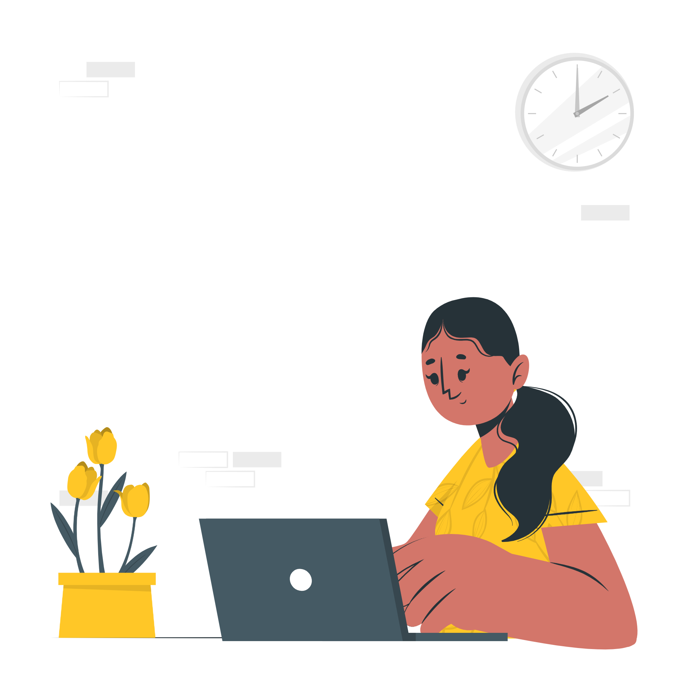

Como ser um voluntarie
Para ser voluntário, preencha o cadastro. Faça avaliações dos
participantes.Realize sessões periódicas. E com isso, evolua como
profissional!
Porque ser um voluntarie?
- Valorização pelo mercado.
- Ganho de experiência.
- Possibilidade de fazer networking.
- Chance de entrar em contato com outras pessoas e culturas.
- Aperfeiçoamento acadêmico e profissional.
- Aprimoramento de habilidades.
- Desenvolvimento de ideias transformadoras.
- Transformação pessoal.
Como ser um usuário
Para ser usuário, preencha o cadastro.
Faça uma avaliação preliminar.
Realize sessões periódicas.
Como participo? / E depois?
- Mantenha a continuidade de suas sessões
- Descubra novos hobbies
- Compartilhe experiencias
- Aumente sua rede de apoio
